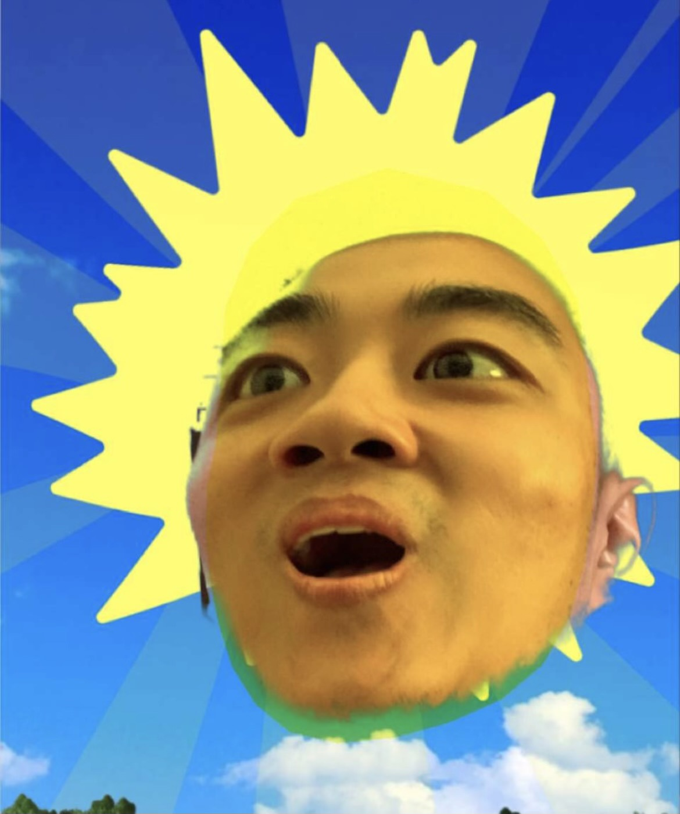
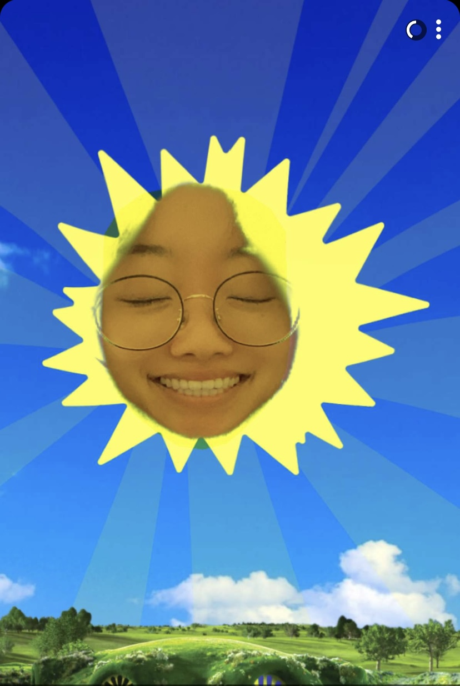

How we got here
Our Story

Leo
found his

Yoonsun
We met the way most good things start: unplanned, and slightly late. What was supposed to be one coffee turned into a walk that lasted the rest of the afternoon, and then into the sort of ordinary, easy days that quietly add up to a life.
Since then we have shared apartments and road trips, arguments about how to load a dishwasher, a great many bad movies, and a few genuinely hard years that we came out of holding on tighter than before. Somewhere in all of it, the question stopped being if and became when.
Now it is April 2027, at a 1939 dairy barn in Virginia, with the small group of people who made us who we are. Thank you for being one of them.
Note for the couple: replace this section with your own words —
it is the part guests read most closely. A photo can be dropped in below by
following the instructions in assets/img/README.md.